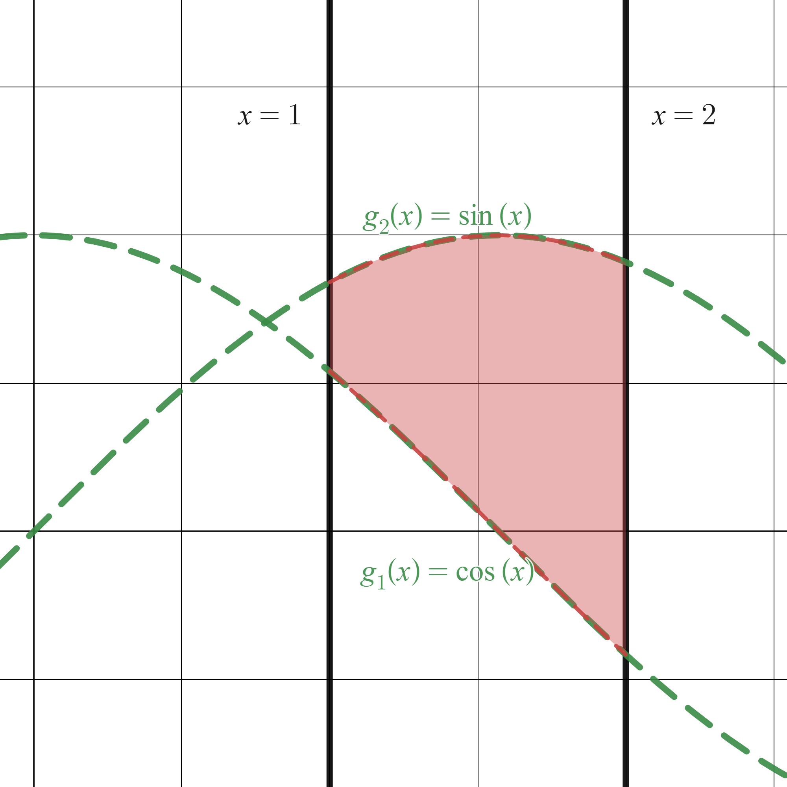

Integración 2D
Contents
4.2. Integración 2D#
Para comenzar este tema, recomendamos encarecidamente la lectura de:
En este mismo Jupyter Book, la sección anterior, Sección Revisión una variable: cálculo de primitivas.
En el Jupyter Book de Cálculo en una variable, la sección de cálculo de primitivas.
4.2.1. Integrales iteradas#
Consideramos una función \(f:D\subset\mathbb{R}^2 \to \mathbb{R}\). Supongamos que conocemos
una primitiva de esta función respecto a \(x\) (es decir, considerando \(y\) como una constante), que denotamos \(F_{x}(x,y)\),
y/o una primitiva respecto a \(y\), que denotaremos por \(F_{y}(x,y)\).
Si ahora queremos realizar una integral en una región que sólo dependa de \(x\) o de \(y\) tendremos:
Example (Ejemplo 1 )
Evaluar \(\displaystyle \int_{1}^{x}\left(2xy + 3y^2\right) dy\).
SOLUCIÓN:
En este caso, considerando \(x\) constante e integrando con respecto a \(y\),
Example (Ejemplo 2 )
Evaluar \(\displaystyle \int_{1}^{2}\left[\int_{1}^{x} (2xy + 3y^2)dy \right] dx\).
SOLUCIÓN:
Ahora, usando lo que acabamos de hacer en el ejemplo anterior,
Este último ejemplo corresponde a una integral iterada.
Normalmente, los corchetes que utilizamos en él no se escriben explícitamente y aparecen directamente expresiones como
Los límites interiores de integración pueden ser variables con respecto a la variable externa de integración. Sin embargo, los límites exteriores de integración deben ser constantes con respecto a ambas variables de integración. Es importante tener esto en cuenta a la hora de definir el dominio sobre el que integraremos.
Después de realizar la integración interna se obtiene una integral estándar definida. La segunda integración produce un número real.
Pensemos un momento el dominio sobre el que estamos realizando la integración en este segundo ejemnplo:
En el eje vertical, \(y\) varía desde la recta horizontal \(y=1\) hasta la recta bisectriz del primer cuadrante, \(y=x\). ¿Dónde pasa esto? Pues…
Cuando \(x\) varía entre \(1\) y \(2\).
Es decir, estamos integrando en el dominio que mostramos, sombreado, en la siguiente figura:
{kind=link}
4.2.2. Aplicación: cálculo del área de una región del plano#
Vamos a ver una primera aplicación de las integrales iteradas.
En cursos pasados aprendisteis (o eso esperamos…) a calcular áreas debajo de una curva o entre dos curvas con integrales de una variable. Vamos a hacer algo muy parecido con integración doble. Adelanto (o, con esa horrible palabra, spoiler): basta definir correctamente el dominio e integrar en él la función unidad (\(f(x,y) = 1\)).
Definition (Área de una región del plano )
Si \(R\) está definida por \(a\leq x \leq b\) y \(g_{1}(x)\leq y \leq g_{2}(x)\), donde \(g_{1}\) y \(g_{2}\) son funciones continuas en \([a,b]\), el áre de \(R\) será
\[ A = \int_{a}^{b}\int_{g_{1}(x)}^{g_{2}(x)} dy \, dx. \]Si \(R\) está definida por \(c\leq y \leq d\) y \(h_{1}(y)\leq x \leq h_{2}(y)\), donde \(h_{1}\) y \(h_{2}\) son funciones continuas en \([a,b]\), el áre de \(R\) será
\[ A = \int_{c}^{d}\int_{h_{1}(y)}^{h_{2}(y)} dx \, dy. \]
{kind=link}
{kind=link}
Te dejamos como ejercicio que calcules (a mano) el área de las dos regiones que se muestran en las figuras de la anterior definición. ¡Ánimo! Con lo que aparece en la próxima subsección podrás comprobar con Python si tus cálculos han sido correctos.
4.2.3. Python. Cálculo de integrales iteradas#
Con la ayuda de Sympy es muy sencillo calcular una integral iterada.
La orden fundamental es sp.integrate, que actúa sobre una expresión o una función Lambda (en el siguiente ejemplo mostramos ambos casos para que puedas ver que el resultado es idéntico). Hay que indicar la variable respecto a la que queremos integrar, el límite inferior y el superior.
Eso sí, en cada paso sólo es capaz de integrar respecto a una variable, por lo que el proceso en el ordenador es prácticamente igual al que hacemos a mano: primero calculamos la integral interior y a su valor le calculamos la integral exterior. El orden, en este caso, es esencial.
Veámoslo sobre el ejemplo 2, que resolvimos manualmente hace un rato:
import sympy as sp
x, y = sp.symbols('x y', real=True) # define as variables simbólicas x, y
f_expr = 2*x*y + 3*y**2
f = sp.Lambda((x,y), f_expr)
res1 = sp.integrate(f_expr, (y, 1, x), (x, 1, 2))
display(res1)
res2 = sp.integrate(f(x,y), (y, 1, x), (x, 1, 2))
display(res2)
Podemos emplear este comando para calcular el área de una región, como hacemos a continuación con el área de la primera región en la última definición:
import sympy as sp
x, y = sp.symbols('x y', real=True) # define as variables simbólicas x, y
# res = sp.integrate(1, (y, sp.cos(x), sp.sin(x)), (x, 1, 2))
res = sp.integrate(1, (y, 0, sp.sin(x)), (x, 1, 2))
display(res)
display(sp.N(res))
4.2.4. Para seguir practicando#
En la página que vas a encontrar si pulsas este enlace, de la Universidad Nacional de San Juan, en Argentina, vas a encontrar algunos ejercicios resueltos y otros propuestos para practicar el cálculo de área de regiones mediante integración iterada. Eso sí: refrena tu ímpetu de momento y deja para más tarde las integrales que impliquen cambio de variable, que aún no lo hemos explicado.